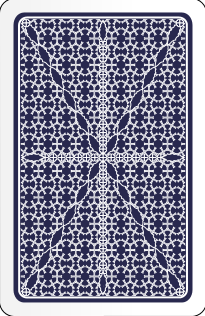

<div class="container-inicio d-flex justify-content-center align-items-center" *ngIf="!inicio">
    <button class="btn btn-primary" (click)="iniciarJuego()">INICIAR JUEGO</button>
</div>


<div class="container text-center" *ngIf="inicio">
    <div>
        <h1>PUNTOS: {{puntos}}</h1>
    </div>
    
      <div class="d-flex justify-content-around card-container">
        <div class="carta-visible">
            
        </div>
        <div class="carta-dorso">
            <div *ngIf="!carta">
                
            </div>
            <div *ngIf="carta">
                
            </div>
        </div>
      </div>

      <div class="d-flex justify-content-around botones m-4">
          <button class="btn btn-outline-primary" (click)="elegirAccion('mayor')">MAYOR</button>
          <button class="btn btn-outline-warning" (click)="elegirAccion('igual')">IGUAL</button>
          <button class="btn btn-outline-success" (click)="elegirAccion('menor')">MENOR</button>
      </div>
    
      <div class="">
        <h1>ERRORES: <span>{{errores}}</span></h1>
      </div>
</div>


<!-- <div *ngIf="terminado==false;">
    <div *ngIf="this.empezo==false; else gameBlock">
        <h1 class="h1">Mayor o Menor?<br><span class="colorDisplay">Reglas del juego</span></h1>
        <div class="container">
            <div class="row">

                <div class="col" style="text-align: center;">
                    
                </div>
        
                <div class="col">
                    <p style="margin-top: 50px;">El jugador tendrá una baraja de cartas boca abajo y se le mostrará una carta volteada. 
                        El objetivo es adivinar si la siguiente carta del mazo va a resultar mayor, menor, o igual a la ultima que se volteo. 
                        Si la respuesta es correcta, se sumará un punto, si no, se sumará un error. 
                        El juego acabará al acumular 10 errores, contando como derrota, o al voltear todas las cartas, contando como victoria.
                    </p>
                    <h1 class="display-3">Buena suerte!!</h1>
                </div>

            </div>
            <hr>
            <div style="text-align: center;">
                <button style="text-align: center; margin-top: 30px;" class="btn btn-secondary" (click)="comenzarJuego()"> Comenzar Juego</button>
                <a class="btn btn-secondary" style="margin-left: 10px; margin-top: 30px;" [routerLink]="['/home']">Volver a home</a>    
            </div>

        </div>
    </div>
 -->